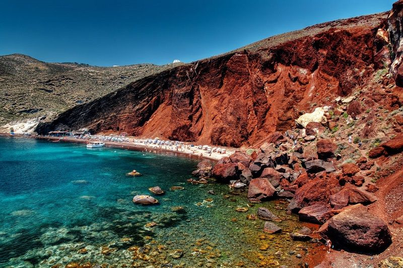

Aqui é uma das viagens que quero fazer com você,
sei que a qualquer lugar que estivermos juntos
vou estar feliz e me divertir muito.
Playlist
Home
Fotos
Ilha de Santorini (Grécia)
Santorini é uma das ilhas Cíclades no Mar Ageu. Ela foi devastada por uma erupção vulcânica no século 16 A.C.,
moldando para sempre sua paisagem ondulada. As casas brancas, em forma de cubo, das 2 principais cidades, Fira e Oia,
ficam nas encostas acima da caldeira (cratera) submersa. Elas avistam o mar,
as ilhas menores a oeste e as praias, constituídas de seixos de lava pretos, vermelhos e brancos.

Praia Vermelha
Já viu uma praia de areia vermelha? Em Santorini, a Praia Vermelha, ou Red Beach,
é tomada por essa cor por conta de suas falésias,
resultado das erupções vulcânicas que formaram a ilha.
Cara olha que foda la tem uma praia vermelha.